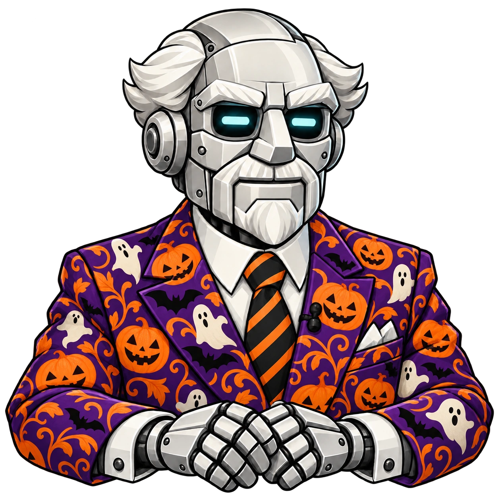
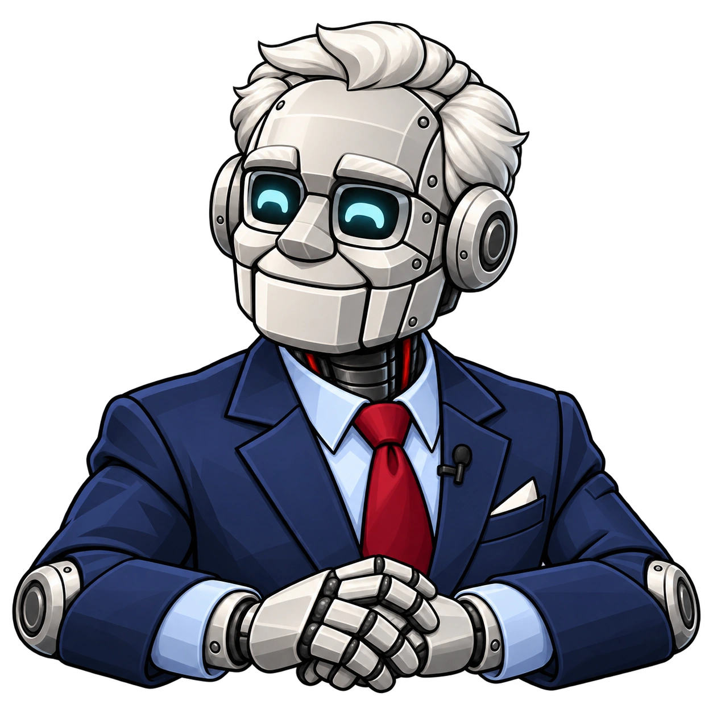

YOFHL DB · Character asset set
Don's Halloween suit
Don on the left. Ron on the right. Select a pose or step through the script.


The tabletop hides the lower torso. Their hands and forearms sit above it, with a small contact shadow underneath.
Don · Default / listeningRon · Default / facing Don
These are static cutouts. Use matching mouth pairs for ordinary speech and short fades for expression changes. The stare and long pause work best held still. Suggested silent holds are starting points for your voice track.
Every pose
Choose “Preview” to see a pose beside the other host, or open its original file.
Script cue data · Generation prompts
Generated with the built-in image_gen tool. The PNGs preserve the original renders; WebP exports retain the same alpha. This local asset preview is separate from the live website segment.